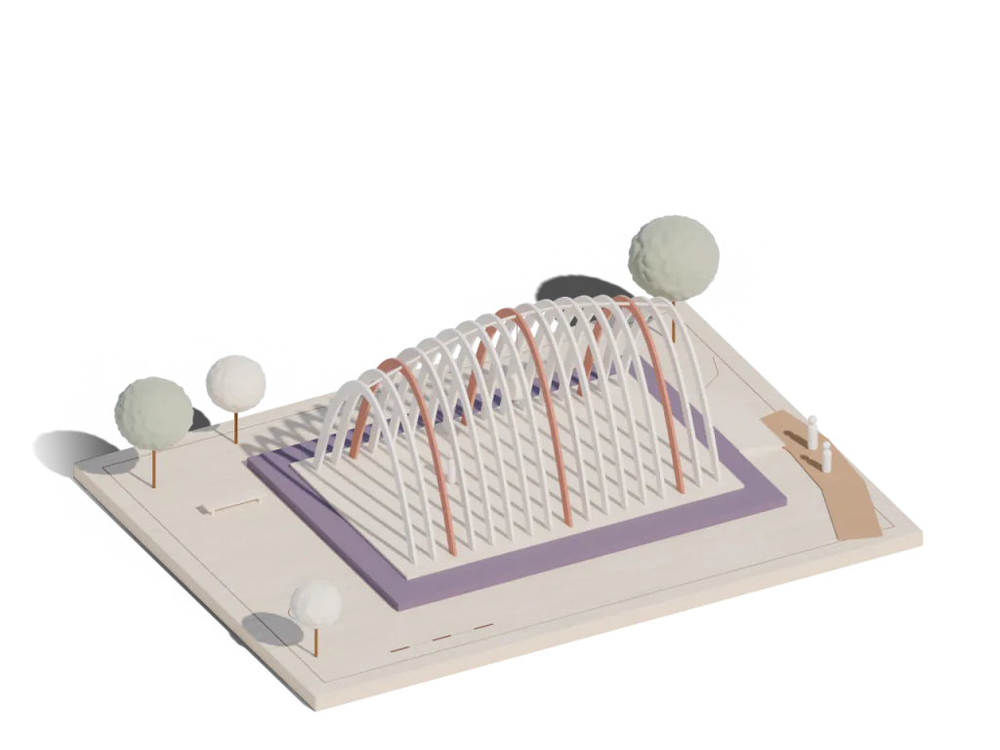
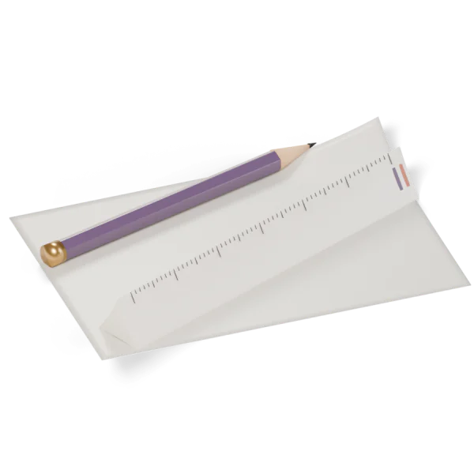
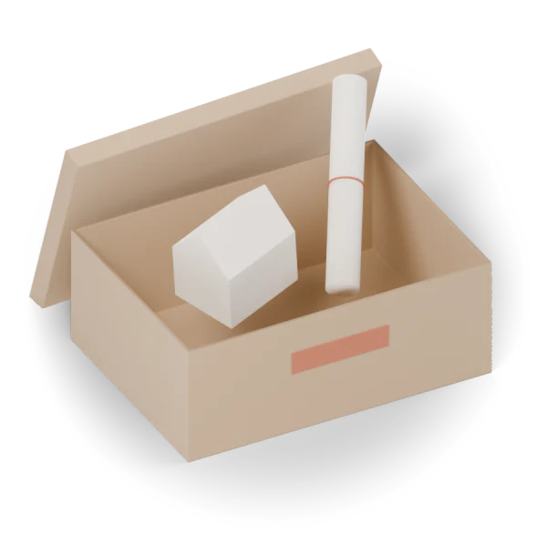

DEIN STUDIENATELIER
Gute Ideen brauchen Raum.
Gedanken sammeln. Zusammenhänge zeichnen. Etwas Eigenes entwerfen.
SmooGo Note ist die Notiz-App fürs Studium: Folien neben der Mitschrift, Apple Pencil, Aufnahmen mit Zeitmarken. Deine Notizen bleiben bei dir.

Acht Fachrichtungen
Was studierst du?
Die App färbt sich in die Palette deiner Richtung und zeigt ihr Lehrmodell. Deine Notizen bleiben dabei, wie sie sind.
Werkzeuge
Alles, was eine Mitschrift braucht.
Gebaut für Vorlesung, Seminar und Lernphase: auf iPad und Mac am Schreibtisch, auf dem iPhone unterwegs.

- 01
Folien daneben
Öffne Vorlesungsfolien oder ein PDF neben deiner Notiz, auf iPad und Mac auch in einem eigenen Fenster. Neue Absätze und Striche verknüpfen sich mit der sichtbaren Folie; ein Tipp auf die Marke springt zurück. „Mitschrift mit Folien“ exportiert jede Folie neben deinen Notizen.
- 02
Schreiben mit dem Apple Pencil
Druckempfindliche Tinte, Textmarker, Radierer und Formen. Hältst du einen Strich, rastet er zur Linie, zum Rechteck oder zur Ellipse ein. Der Pencil zeichnet, ein Finger scrollt, und Doppeltippen folgt deiner Systemeinstellung.
- 03
Aufnehmen mit Zeitmarken
Nimm die Vorlesung auf, während du schreibst. Zeitmarken verbinden deine Notizen mit der Stelle in der Aufnahme. Transkribiert wird auf dem Gerät.
- 04
PDFs durcharbeiten
Markieren, unterstreichen, durchstreichen und kommentieren, Seiten drehen und umsortieren, alles mit Rückgängig. Text in Bildern erkennt die App direkt auf dem Gerät.
- 05
Ordnung wie im Studium
Notizbücher, Abschnittsgruppen, Abschnitte und Unterseiten, dazu Suche, Favoriten, Schlagwörter, Archiv und Vorlagen. Auf unterstützten Geräten fasst Apple Intelligence zusammen und findet Aufgaben, lokal auf dem Gerät.
- 06
Auf all deinen Geräten
iPhone, iPad und Mac gleichen sich über deine private iCloud ab, sobald du es einschaltest. Kein Konto bei uns, kein Server von uns.
Datenschutz
Deine Notizen gehören dir.
Sie bleiben auf deinem Gerät, solange du nichts anderes entscheidest.

Notizen bleiben lokal auf deinem Gerät.
iCloud nur, wenn du es einschaltest – in deinem privaten Account.
Kein Tracking, keine Analyse, keine Werbung.
Keine Weitergabe an Dritte.